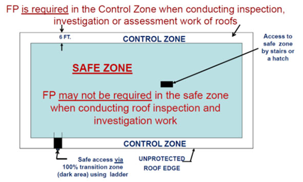

21.A General
21.A–21.A.08
21.A General. The requirements of this Section are applicable to all Government and Contractor work forces when their employees are working at heights, exposed to fall hazards and/or using fall protection equipment. Every Contractor and USACE-owned/operated permanent facility is responsible for establishing, implementing and managing a fall protection program.
21.A.01 Fall Protection Threshold.
- The fall protection threshold height requirement is 6 ft (1.8 m) for ALL work covered by this manual, unless specified differently below, whether performed by Government or Contractor work forces, to include steel erection activities, systems-engineered activities (prefabricated) metal buildings, residential (wood) construction and scaffolding work.
- For all USACE-owned/operated permanent facilities with open-sided floors, platforms or unprotected edges 4 ft (1.2 m) or more above adjacent floor or ground level, see Section 24.A.01.d.
▸Note 1: Floating Plant and Vessels are excluded from these requirements except where specifically cited in Sections 19.D and 19.E.
▸Note 2: For fall protection requirements in excavations, see Section 25.A.02.
▸Note 3: The Terms "CP" And "QP" in this section refer to Competent Person for fall protection and Qualified Person for Fall Protection respectively. > See Sections 21.B.02, 21.B.03 and Appendix Q.
21.A.02 Workers exposed to fall hazards shall be protected from falling to a lower level by the use of standard guardrails (see Section 21.F.01.b), work platforms, temporary floors, safety nets, engineered fall protection systems, personal fall arrest systems, or the equivalent, in the following situations:
- Whenever workers are exposed to falls from unprotected sides or edges, access ways, fixed ladders over 20 ft (6 m) in height, unprotected roof edge or floor openings, holes and skylights, unstable surfaces, leading edge work, scaffolds, formwork, work platforms, re-bar assembly, steel erection and engineered metal buildings;
- For access ways or work platforms over water, machinery, or dangerous operations;
- When installing or removing sheet piles, h-piles, cofferdams, or other interlocking materials from which workers may fall 6 ft (1.8 m) or more;
▸Note: The use of sheet pile stirrups as a fall protection method is prohibited.
- Where there is a possibility of a fall from any height onto dangerous equipment, into a hazardous environment, or onto an impalement hazard;
- For steel erection activities, when connectors are working at the same connecting point, they shall connect one end of the structural member before going out to connect the other end. The connectors shall always be 100% tied off.
21.A.03 The order of control measures (the hierarchy of controls) to abate fall hazards or to select and use a fall protection method to protect workers performing work at heights shall be:
- Elimination: Remove the hazard from work areas or change task, process, controls or other means to eliminate the need to work at heights with its subsequent exposure to fall hazards (i.e., build roof trusses on ground level and then lift into place or design change by lowering a meter or valve at high locations to a worker's level). This control measure is the most effective;
- Prevention (passive or same-level barrier): isolate and separate fall hazards from work areas by erecting same level barriers such as guardrails, walls, covers or parapets;
- Work platforms (movable or stationary): use scaffolds, scissor lifts, work stands or aerial lift equipment to facilitate access to work location and to protect workers from falling when performing work at high locations. > See Section 22.S;
- Personal Protective Systems and Equipment: Use of fall protection systems, including (in order of preference): restraint, positioning, or personal fall arrest. All systems require the use of full body harness, connecting means and safe anchorage system.
- Administrative Controls: Introduce new work practices that reduce the risk of falling from heights, or to warn a person to avoid approaching a fall hazard (i.e., warning systems, warning lines, audible alarms, signs or training of workers to recognize specific fall hazards).
21.A.04 When using stilts, working from raised platforms, or floors above a walking/working surface that exposes workers to a fall of 6 ft (1.8 m) or more in areas protected by guardrails, the height of the guardrail must be raised accordingly to maintain a protective height of 42 in (107 cm) above the stilt, raised platform, floors, or work stands.
21.A.05 During construction activities, fall protection is required for employees exposed to fall hazards while conducting inspection, investigation or assessment work.
21.A.06 Prior to start of construction or after construction work is complete, fall protection is required when conducting inspection, investigation or assessment work WITHIN 6 ft (1.8 m) from an unprotected edge of a roof. An AHA shall be developed and reviewed by a CP for this activity and submitted for GDA review and acceptance. > See Figure 21-1.
21.A.07 Prior to start of construction or after construction work is complete, fall protection may not be required when conducting inspection, investigation or assessment work MORE THAN 6 ft (1.8 m) away from an unprotected edge of a roof. An AHA shall be developed and reviewed by a CP for this activity and submitted for GDA review and acceptance. > See Figure 21-1.
21.A.08 During maintenance evolutions (i.e., inspecting or maintaining HVAC or other equipment on roofs), fall protection is required when conducting inspection and investigation work.
FIGURE 21-1
Control Zone/Safe Zone Fall Protection

{kind=link}